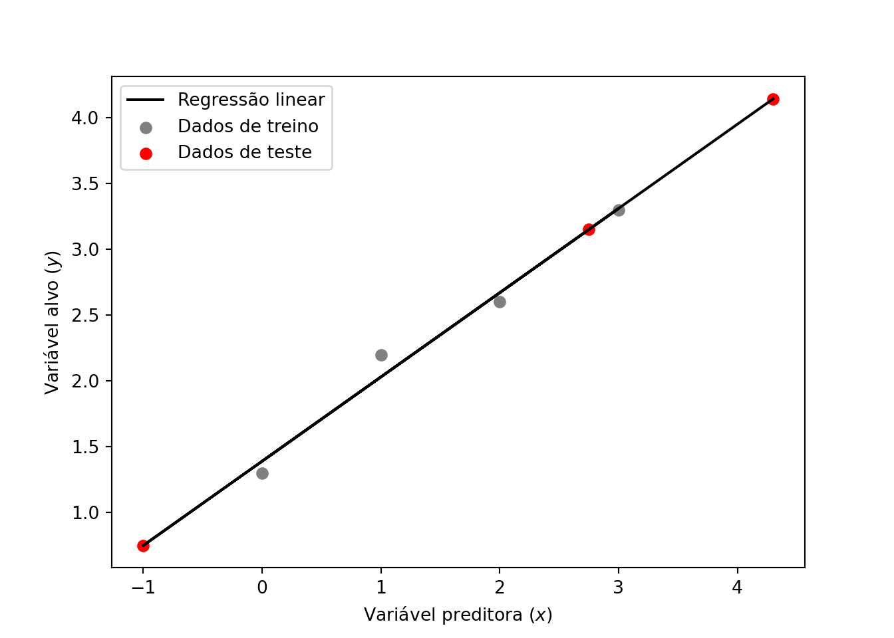

3 Regressão
Todas as pessoas pelo menos uma vez na vida já sentiu ou sentirá a necessidade de prever algum acontecimento futuro. Estamos a todo momento assimilando informações para realizar alguma tomada de decisão, seja de forma intrínseca ou não. No contexto de Machine Learning (ML) isso é feito pela técnicas de regressão. A regressão é uma ferramenta que busca modelar relações entre variáveis dependentes e independentes através de métodos estatísticos (Soto 2013).
Uma variável independente, normalmente representada pela variável \(x\), caracteriza uma grandeza que está sendo manipulada durante um experimento e que não sofre influência de outras variáveis. Já a variável dependente, normalmente representada pela variável \(y\), caracteriza valores que estão diretamente associados à variável independente, ou seja, ao ser manipulada os valores variável independente, o valor das variáveis dependentes também sofrem alterações. Na Figura 3.1 é apresentada a relação entre a expectativa de vida baseada e um índice de felicidade calculado em diversos países obtidos a partir de um levantamento feito por Helliwell et al. (2020). A variável independente nesse exemplo é representada pelo índice de felicidade e a expectativa de vida age como variável independente, dessa forma pode ser observada uma tendência de expectativa de vida maior em países com alto índice de felicidade, com uma força de correlação de 0,77.
![Relação entre o índice de felicidade e expectativa de vida. Fonte: [@helliwell2020social]](assets/happiness_world.png)
Figure 3.1: Relação entre o índice de felicidade e expectativa de vida. Fonte: (Helliwell et al. 2020)
As relações entre as variáveis dependentes e independetes são feitas através de algum coeficiente de correlação. Uma das métricas de correlação mais utilizadas é o coeficiente de Pearson, que mede a associação linear entre duas variáveis (Kirch 2008). Esse coeficiente de correlação pode ser definido pela Equação (3.1), onde \(n\) é o total de amostras, \(\overline{x}\) e \(\overline{y}\) são as médias aritméticas de ambas as variáveis. Os valores do coeficiente de Pearson variam entre -1 e 1, de tal forma que quanto mais próximos desses extremos, melhor correlacionado estão as variáveis. A Figura 3.2 mostra alguns exemplos com gráficos de disperssão de variáveis com diferentes correlações.
\[\begin{equation} r_{xy} = \frac{{}\sum_{i=1}^{n} (x_i - \overline{x})(y_i - \overline{y})} {\sqrt{\sum_{i=1}^{n} (x_i - \overline{x})^2(y_i - \overline{y})^2}} \tag{3.1} \end{equation}\]
![Diferentes correlações entre variáveis. Fonte: [@helliwell2020social]](assets/correlations.png)
Figure 3.2: Diferentes correlações entre variáveis. Fonte: (Helliwell et al. 2020)
Os métodos de regressão se utilizam dessas correlações entre as variáveis para
estimar valores não existentes na amostra ou conjunto de dados. Entretanto, nem
sempre essas correlações são tão explicítas assim, sendo necessário outras
abordagens mais robustas para realizar as previsões.Em ML os modelos de
regressão podem ser criados a partir de diversas abordagens, desde as mais
simples com poucas configurações de parâmetros e de fácil interpretação do
funcionamento, até as abordagens mais complexas. Os métodos de regressão
abordados neste capítulo serão Regressão linear,
Máquina de vetores de suporte e Árvores de decisão.
3.1 Regressão Linear
A regressão linear é um dos métodos mais intuitivos e utilizados para essa finalidade. Esses métodos são dividos em dois grupos, a regressão linear simples (RLS) e regressão linear múltipla (RLM). A RLS tem como objetivo estabelecer uma relação entre duas variáveis através de uma função, que pode ser definida por:
\[\begin{equation} y_{i} = \alpha+\beta x_{i} \tag{3.2} \end{equation}\]
Onde \(y_{i}\) é a variável alvo, \(\alpha\) e \(beta x_{i}\) são coeficientes calculados pela regressão, que representam o intercepto no eixo \(y\) e inclinação da reta, respectivamente.
A RLM é semelhante semelhante à RLS, porém possui multiplas variáveis preditoras, e pode ser definida por:
\[\begin{equation} y_{i} = \alpha+\beta x_{i1}+\beta x_{i2}+...+\beta x_{in} \tag{3.3} \end{equation}\]
Onde \(y_{i}\) é a variável alvo, \(\alpha\) continua sendo o coeficiente de intercepto e \(\beta x_{ip}\) o é coeficiente angular da \(p\)-ésima variável. Ambos os métodos podem ainda serem somados a um termo \(\epsilon\) de erro.
3.1.1 Coeficientes da regressão linear
Existem diversas abordagens para se calcular os coeficientes \(\alpha\) e \(\beta\) da equação da regressão linear, as técnicas baseadas em mínimos quadrados oridinários e gradiente descendente são as mais comuns. A seguir serão apresentados os funcionamentos dessas abordagens.
3.1.1.1 Métodos dos quadrados ordinários
O Método dos quadrados ordinários (MQO) ou método dos mínimos quadrados (MMQ), busca encontrar o melhor valor para os coeficientes citados anteriormente, de tal forma que a diferença absoluta entre o valor real e o predito pela função seja a menor possível entre todos os pontos. A Figura 3.3 mostra um exmplo de regressão linar utilizando o MQO para o conjunto pontos descritos na tabela a seguir:
| Variável independente | Variável dependente | | 0.44 | 5.52 | | 1.74 | 8.89 | | 0.41 | 4.05 | | 1.84 | 9.31 | | 0.98 | 6.57 | | 1.22 | 8.27 | | 1.53 | 6.93 | | 1.04 | 6.41 | | 0.59 | 6.93 | | 0.38 | 6.98 |

Figure 3.3: Exemplo do método dos quadrados ordinários.
Para se chegar no resultado apresentado na Figura 3.3, os coeficientes da regressão linear foram ajustados utilizando derivadas parciais, de tal tal forma que o erro quadrático médio entre entre a função e cada um dos pontos fossem a menor possível. A Figura 3.4 mostra o ajuste dos coeficientes da equação em relação a cada ponto.

Figure 3.4: Ajuste da regressão linear por método dos quadrados ordinários.
3.1.1.2 Gradiente descendente
O método do gradiente descendente (GD) é uma das técnicas mais utilizadas para otimização de modelos de ML. Este é um método interativo que busca encontrar os coeficiente \(\alpha\) e \(\beta\) através da minimização de uma função de custo, que normalmente é o erro quadrático médio (MSE - sigla do inglês, mean squared error).
O GD funciona de forma iterativa e inicializa os coeficientes com um valor predefinido ou aleatório. Em cada iteração é obtido o somatório do erro entre todos os valores das variáveis dependentes e valores calculados pela função. Com base nesse erro e em uma taxa de aprendizagem do modelo predefinida, os valores dos coeficientes da função são atualizados para a próxima iteração. A taxa de aprendizagem deve ser definda com um valor equilibrado. A definição de um valor muito alto para a taxa de aprendizagem pode levar o modelo a cair em um mínimo local, ou seja, o modelo não consegue chegar em seu melhor ajuste. Já quando a taxa de aprendizagem é definida com um valor muito baixo, o modelo demora mais tempo para chegar no ajuste ideal, necessitando de muito mais tempo e processamento até que haja a convergência. A Figura 3.5 mostra o comportamento do GD com diferentes categorias de valores mencionadas para a taxa de aprendizagem.

Figure 3.5: Problemas na taxa de aprendizado do gradiente descendente.
Os prinicipais parâmetros a serem definidos nessa abordagem são a taxa de aprendizagem e o número de iterações. Considerando os pontos utilizados no exemplo anterior, foi aplicada a regressão linear utilizando o GD como método de atualização dos coeficientes. A Figura 3.6 mostra o ajuste da função, custo e os coeficientes \(\alpha\) e \(\beta\) ao longo de 50 iterações com taxa de aprendizado muito baixa. Nessa figura pode ser observado que as iterações finalizam antes da convergência do modelo.

Figure 3.6: Regressão linear com taxa de aprendizagem baixa no gradiente descendente.
Como mencionado anteriormente, uma taxa de aprendizagem muito grande também interfere no ajuste dos coeficientes, uma vez o modelo não consegue atingir o mínimo global. A Figura 3.7 mostra o resultado da execução da regressão linear utilizando uma taxa de aprendizagem muito grande no GD.

Figure 3.7: Regressão linear com taxa de aprendizagem alta no gradiente descendente.
Já com uma taxa de aprendizagem equilibrada, o GD é capaz de ajustar os coeficientes de forma mais eficiente. A Figura 3.8 mostra o resultado do algoritmo executado com uma taxa de aprendizagem mais equilibrada. Como os valores iniciais dos coeficientes são definidos de forma aleatória, nas primeiras iterações o gradiente apresenta uma alta pertubação, que vai se atenuando ao longo das épocas.
Figure 3.8: Regressão linear com taxa de aprendizagem equilibrada no gradiente descendente.
Para dados com poucas dimensões, ou seja, poucas variáveis preditoras, o MQO é mais recomendado, pois diferente do GD, não é um algoritmo interativo, e sua complexidade está associada diretamente à quantidade de pontos. Já o GD tem melhor performance quando os dados possuem muitas dimensões.
A regressão linear pode ser aplicada em uma vasta variedade de problemas, mas como foi apresentado ao longo desta seção, é necessário que os dados possuam uma alta correlação. Este algoritmo está disponível na biblioteca Scikit-learn par ser utilizado em Python. Um exemplo utilizando a regressão linear é apresentado no código a seguir:
from sklearn.linear_model import LinearRegression
import matplotlib.pyplot as plt
# Definição dos valores de uma única variável preditora
x = [[0], [1], [2], [3]]
# Definição dos valores das variáveis alvo
y = [1.3, 2.2, 2.6, 3.3]
# Instanciando regressão linear e ajustando-a aos dados
lr = LinearRegression().fit(x, y)
# Obtendo os valores aproximados da variável alvo
y_regression = [lr.predict([xi])[0] for xi in x]
# Criando novos pontos somente com valores da variável preditora
x_test = [[-1], [2.75], [4.3]]
# Aplicando regressão linear para prever os valores da variável alvo
y_test = lr.predict(x_test)
# Concatenando dados de treino e teste
y_regression = [*y_regression, *y_test]
x_regression = [*x, *x_test]
# Exibindo dados de treino
plt.scatter(x, y, color='gray', label='Dados de treino')
# Exibindo dados de teste
plt.scatter(x_test, y_test, color='red', label='Dados de teste')
# Exibindo reta da regressão linear
plt.plot(x_regression, y_regression, color='black', label='Regressão linear')
#Configurações do gráfico
plt.xlabel('Variável preditora ($x$)')
plt.ylabel('Variável alvo ($y$)')
plt.legend()
plt.show()
3.2 Máquinas de vetores de suporte
As máquinas de vetores de suporte (SVM - sigla do inglês, support vector machine) são modelos de aprendizado de máquina supervisionado concebido a partir de um conceito inicialmente proposto por Vapnik and Chervonenkis (1963). As SVM podem ser utilizadas tanto para tarefas de classificação, quanto para tarefas de regressão, sendo uma ótima alteranativa aos modelos de redes neurais artificiais profundas que exigem um custo computacional muito superior em dados com muitas dimensões. Outra vantagem na utilização dos modelos baseados em SVM é que eles não são sensíveis aos outliers, ou seja, valores extremos não causam ruído no treinamento.
O funcionamento básico das SVM consiste em ajustar a equação de uma reta, denominada hiperplano de tal forma que a distância entre ela e os pontos com características diferentes seja maximizada. Um conjunto de \(n\) pontos é definido como \((\vec{x_{1}}, y_{1}), (\vec{x_{2}}, y_{2}), ..., (\vec{x_{n}}, y_{n})\), onde \(\vec{x_{i}}\) são as variáveis independentes representadas por um vetor de \(d\)-dimensões e \(y_{i}\) são as variáveis dependentes. A distância maximizada entre o hiperplano e as fronteiras são definidas como margens e os pontos que estão no limite dessa margem são os vetores de suporte. Esses componentes podem ser modelados da seguinte forma:
\[\begin{equation} \vec{w}\cdot\vec{x}-b = \begin{cases} & -1, & \text{primeiro vetor de suporte} \\ & 0, & \text{hiperplano} \\ & 1, & \text{segundo vetor de suporte} \end{cases} \tag{3.4} \end{equation}\]
Onde \(\vec{w}\) é um vetor perpendicular aos pontos, \(\vec{x}\) é o vetor do conjunto de pontos é \(b\) é uma constante opcional que pode ser usada como uma bias. Quando o resultado dessa equação é igual a \(1\) ou \(-1\) trata-se de um dos vetores de suporte, quando o resultado é um valor maior que \(0\) e menor que \(1\) ou menor que \(0\) e maior que \(-1\) trata-se de um espaço da margem. A Figura 3.9 mostra um exemplo da aplicação do algoritmo SVM em um conjunto de dados linearmente separáveis. Nessa figura, o hiperplano é caracterizado pela linha contínua, os vetores de suporte são as linhas tracejadas que interceptam os pontos com contorno destacado, e o espaço entre eles são as margens.

Figure 3.9: SVM para conjunto de dados linearmente separáveis.
As primeiras versões das SVM eram limitadas somente para resolução de problemas linearmente separáveis, como mostrado no exemplo anterior, mas a grande maioria dos problemas não são linearmente separáveis. Considerando a Figura 3.10 é muito difícil traçar um hiperplano que separe bem os pontos de cores diferentes. Uma alternativa para esse problema é aumentar as dimensões para a representação do hiperplano. Essa tarefa é feita com a introdução de um conceito definido kernel.

Figure 3.10: Conjunto de dados não linearmente separáveis.
Ao traçar um hiperplano não linear com a utilização de kernels é possível ajustar melhor os vetores de suporte aos dados. A Figura 3.2.1 mostra o conjunto de dados ajustado com hiperplanos lineares e não lineares.

Figure 3.11: Hiperplanos utilizando kernels com funções lineares e não lineares.
A abordagem utilizando os kernels é uma das principais características desse modelo de ML, pois faz com que o hiperplano seja ajustado em uma dimensão superior, utilizando equações de polinômios de maior grau. A Figura ?? mostra graficamente como é realizada essa manipulação.
Figure 3.12: Representação gráfica dos dados e da função não linear.
A utilização de kernels é uma das principais características do SVM e faz com que os modelos baseados nessa abordagem, sejam tão robustos quanto outras técnicas mais complexas.
3.2.1 Kernels
A utilização dos kernels em SVM foram introduzidos por Boser, Guyon, and Vapnik (1992). Esses componentes kernels nada mais são do que uma função que serão responsáveis por maximizar as margens dos vetores de suporte. A maioria das bibliotecas de ML, já possuem kernels implementados e também permitem a integração de outras funções customizadas. A lista a seguir aprensenta brevemente os kernels mais utilizados.
- Linear: Como mencionado anteriormente, é eficiente somente para problemas linearmente separáveis, uma vez que seu ajuste se da através da equação de uma reta. O kernel linear é definido apenas pelo produto entre duas amostras \(\vec{x_{i}}\) e \(\vec{x_{j}}\):
\[\begin{equation} k(\vec{x_{i}}, \vec{x_{j}}) = \vec{x_{i}} \cdot \vec{x_{j}} \tag{3.5} \end{equation}\]
- Polinominal: Os kernels polinomiais popularmente utilizados em tarefas de processamento de imagens, permitem adicionar curvas aos hiperplanos. Além das amostras \(\vec{x_{i}}\) e \(\vec{x_{j}}\), o kernel polinominal também recebe o a variável \(d\) que indica o seu grau, como definido pela equação:
\[\begin{equation} k(\vec{x_{i}}, \vec{x_{j}}) = (\vec{x_{i}} \cdot \vec{x_{j}} + 1)^{d} \tag{3.6} \end{equation}\]
- Função gaussiana de base radial: Esse kernel é recomendado quando não se tem um conhecimento prévio a cerca dos dados. Esse kernel é definido pela seguinte equação:
\[\begin{equation} k(\vec{x_{i}}, \vec{x_{j}}) = exp \left(-\frac{\lVert\vec{x_{i}} - \vec{x_{j}}\rVert^2}{2\sigma^2} \right) \tag{3.7} \end{equation}\]